Human-in-the-loop là gì? Vai trò người duyệt trong AI
Human-in-the-loop (HITL) là cách tổ chức quy trình AI có sự tham gia trực tiếp của con người để kiểm tra, điều chỉnh hoặc phê duyệt kết quả tại những bước được xác định trước. Trong marketing, người duyệt có thể kiểm chứng thông tin sản phẩm, sửa nội dung sai hoặc yêu cầu AI làm lại trước khi xuất bản. Giá trị của HITL nằm ở việc người duyệt có đủ thông tin, chuyên môn và quyền can thiệp để xử lý sai sót. Bài viết này làm rõ HITL là gì, khác human-on-the-loop như thế nào và cách phân chia ba mức duyệt theo mức độ ảnh hưởng của lỗi, giúp doanh nghiệp đưa AI vào công việc với trách nhiệm rõ ràng.
- Đăng ngày
- Cập nhật

Tóm tắt nhanh
- Human-in-the-loop là cách đưa sự tham gia của người vào hệ thống AI sao cho sự tham gia đó thay đổi được đầu ra. Một lượt duyệt chỉ có tác dụng khi người duyệt có căn cứ, chuyên môn, quyền sửa hoặc dừng và đúng bản sẽ phát hành.
- Human-in-the-loop dừng hệ thống chờ người; human-on-the-loop để hệ thống chạy trong lúc người theo dõi. Điều 14 khoản 4 của Đạo luật AI châu Âu là bảng kiểm năm quyền dùng tự nguyện được cho mọi điểm duyệt.
- Thiên lệch tự động hóa có thật: trong một nghiên cứu trên 28 chuyên gia, khoảng 7% lượt đánh giá ban đầu đúng bị gợi ý sai của AI lật ngược. Nói về tỉ lệ sai và loại lỗi giúp người duyệt tỉnh táo hơn nói về độ chính xác.
- Phân mức duyệt theo hệ quả khi lỗi lọt ra ngoài và đo chất lượng duyệt bằng lỗi còn lọt qua mẫu mười bản mỗi tháng, không bằng tỉ lệ chấp nhận đứng một mình.
Mục lục bài viết14 phần
Có người duyệt không tự bảo đảm bài đúng. Với doanh nghiệp SME (doanh nghiệp vừa và nhỏ) làm AI marketing, hiệu quả của lượt duyệt phụ thuộc bốn thứ: người đó thấy căn cứ gì, có chuyên môn nào, có quyền sửa hoặc dừng hay không, và bản đang duyệt có đúng là bản sẽ phát hành hay không. Thiếu một trong bốn, lượt duyệt chỉ còn là một thao tác xác nhận.
Human-in-the-loop là gì và hoạt động theo cơ chế nào?
Human-in-the-loop là gì? Theo cách Stanford HAI mô tả, HITL được định nghĩa qua sự phản hồi hoặc can thiệp của người trong hoạt động AI, gồm hướng dẫn, sửa lỗi và quyết định cuối. Điểm mấu chốt nằm ở chữ ảnh hưởng: sự tham gia phải làm thay đổi được công việc, thay vì chỉ ghi nhận rằng một người đã nhìn màn hình.
Ví dụ, AI soạn một bản quảng cáo, người kiểm tra nhận thấy điều kiện ưu đãi bị bỏ. Người đó trả lại yêu cầu sửa, rồi kiểm bản chỉnh trước khi chấp nhận. Phản hồi đã làm thay đổi đầu ra và làm thay đổi đường đi của luồng. Đó là một vòng phản hồi đầy đủ.
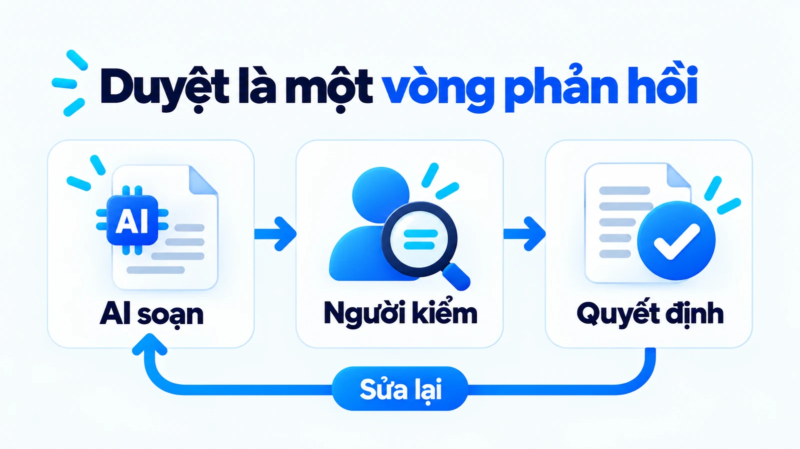
Cách kiểm tra nhanh nhất một điểm duyệt có thật hay không: nhìn vào các nút mà người duyệt có. Nếu chỉ có nút chấp nhận, người đó không phản hồi được, họ chỉ đánh dấu. Một điểm duyệt thật cần ít nhất ba lựa chọn: chấp nhận, trả lại kèm lý do, và chuyển cho người có chuyên môn phù hợp.
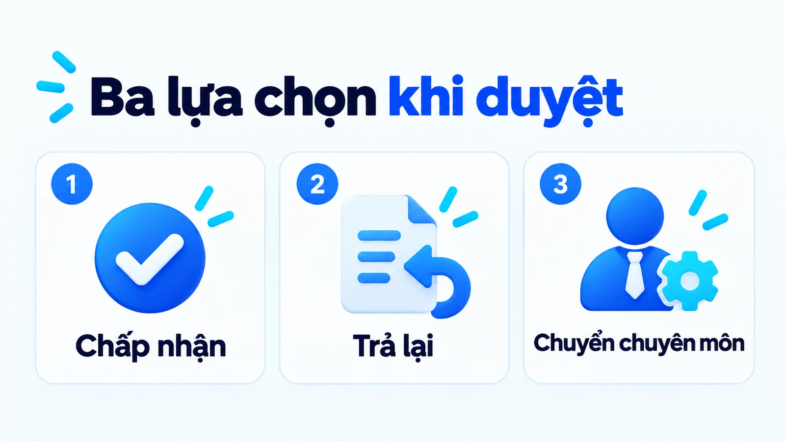
Thời điểm tham gia cũng quyết định phần việc người đó còn kiểm soát được. Một người được thông báo sau khi quảng cáo đã gửi đi không có cùng vai trò với người có thể chặn trước khi gửi. Cả hai đều được gọi là có người giám sát, nhưng chỉ một trong hai thay đổi được kết quả. Gọi chung dễ làm mờ khác biệt này, nhất là khi đội cần trả lời câu hỏi ai chịu trách nhiệm cho một bài đã đăng sai.
Con người có thể tham gia ở giai đoạn nào?
Human-in-the-loop diễn ra ở hai lớp khác nhau, và hai lớp này thường bị gộp. Lớp vận hành là lúc hệ thống đang chạy: người sửa bản nháp, xử lý ngoại lệ, quyết định phát hành. Lớp huấn luyện là lúc dữ liệu được dùng để thay đổi hành vi của mô hình: người gán nhãn, chấm chất lượng đầu ra, cung cấp phản hồi có chủ đích. AWS mô tả nhiều điểm tham gia trải khắp quá trình AI và học máy, không chỉ bước duyệt cuối.
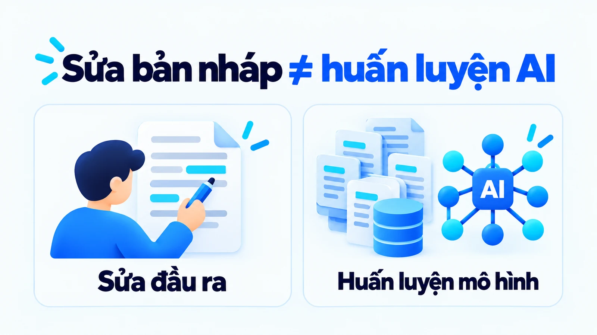
Với một đội marketing dùng công cụ có sẵn, việc sửa bài trong phiên không mặc định làm mô hình được huấn luyện lại. Phản hồi có thể chỉ thay bản nháp lần này, hoặc được lưu để phân tích, hoặc không đi đâu cả. Muốn dùng phản hồi cho huấn luyện cần một cơ chế riêng và cần biết nhà cung cấp xử lý dữ liệu thế nào.
Đây không phải chi tiết kỹ thuật vụn vặt. Nhiều đội để nguyên một lỗi lặp đi lặp lại vì tin rằng công cụ sẽ tự học từ các lần sửa. Thực tế cách sửa lỗi lặp là đổi hướng dẫn đầu vào hoặc đổi tài liệu nguồn, chứ không phải sửa thêm vài chục lần nữa và chờ mô hình nhận ra.
Human-in-the-loop và human-on-the-loop khác nhau ra sao?
Khác ở chỗ hệ thống có dừng lại chờ người hay không. AWS phân biệt hai khái niệm: human-in-the-loop là người tham gia vào quyết định cụ thể, hệ thống dừng lại chờ; human-on-the-loop là người theo dõi quá trình và can thiệp khi thấy cần, hệ thống vẫn chạy. Thêm một mức thứ ba ít được nhắc: human-out-of-the-loop, khi người chỉ xem lại sau khi mọi thứ đã xong.
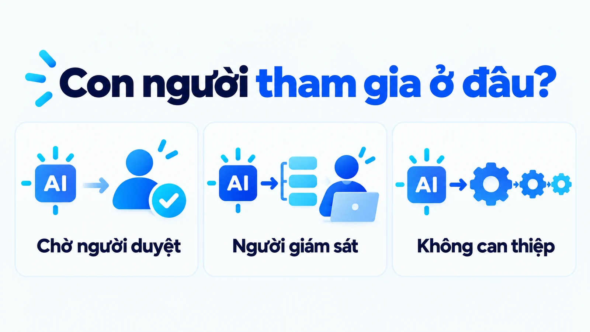
Trong một đội nội dung, ba mức này thường tồn tại song song mà không ai đặt tên cho chúng, dù chỉ mức đầu tiên mới đúng nghĩa human-in-the-loop. Bài blog đi qua mức thứ nhất vì có người duyệt trước khi đăng. Bình luận trả lời tự động trên fanpage có thể đang ở mức thứ hai, người quản trị chỉ đọc lại khi có ai đó phản ánh. Một lịch đăng tự động sinh caption rồi đăng thẳng là mức thứ ba.
Vấn đề không nằm ở việc mức nào tốt hơn, mà ở việc đội có biết mình đang ở mức nào cho từng loại nội dung hay không. Tên gọi cần đi kèm mô tả quyền thực tế, nếu không thì câu có người giám sát sẽ được dùng để trấn an chính mình. Trong luồng nội dung, không nhất thiết đặt một người ở mọi thao tác, nhưng cần biết ai xác lập nguồn được dùng, ai kiểm khẳng định và ai chịu trách nhiệm quyết định phát hành.
Đọc tiếp bài AI workflow là gì để đặt điểm duyệt vào quan hệ với đầu vào, bước xử lý và trạng thái đầu ra. Nếu còn phân vân giữa hệ thống chạy theo luồng và hệ thống tự chọn bước, bài AI agent và chatbot khác nhau thế nào phân tích riêng phần này.
Người duyệt cần được trao những quyền nào?
Đạo luật AI của Liên minh châu Âu đưa ra danh sách cụ thể nhất hiện có. Điều 14 khoản 4 quy định người được giao giám sát phải được tạo điều kiện để làm năm việc.
- Hiểu năng lực và giới hạn: hiểu được năng lực và giới hạn của hệ thống, và theo dõi được để phát hiện dấu hiệu bất thường.
- Ý thức về thiên lệch tự động hóa: tức xu hướng tin vào đầu ra của máy.
- Diễn giải đúng đầu ra: có công cụ hỗ trợ đi kèm để đọc đúng điều hệ thống trả về.
- Được quyền không dùng đầu ra: bỏ qua, ghi đè và đảo ngược nó.
- Can thiệp hoặc dừng hệ thống: can thiệp được vào quá trình vận hành hoặc dừng hệ thống bằng một nút dừng.
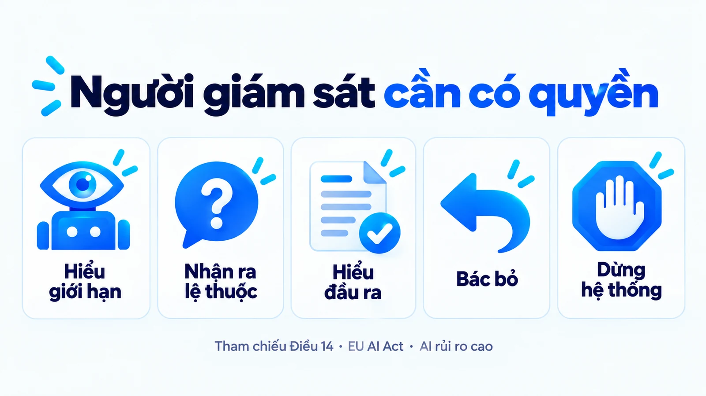
Điều 14 áp cho nhóm rủi ro cao, không áp cho marketing
Cần nói rõ phạm vi để không dùng sai. Quy định này áp cho hệ thống AI thuộc nhóm rủi ro cao, và việc sinh nội dung marketing không nằm trong nhóm đó. Nghĩa là đội marketing không bị ràng buộc bởi Điều 14. Giá trị của nó nằm ở chỗ khác: đây là lần đầu có một văn bản mô tả cụ thể việc giám sát con người đòi hỏi những gì, nên nó dùng được làm bảng kiểm tự nguyện cho bất kỳ điểm duyệt nào.
Ba trong năm mục đáng chú ý với đội nội dung. Mục thứ hai nêu thẳng thiên lệch tự động hóa như một thứ người giám sát phải được cảnh báo, chứ không coi đó là lỗi cá nhân. Mục thứ tư tách quyền bỏ qua đầu ra khỏi quyền sửa đầu ra, hai việc khác nhau. Mục thứ năm đòi hỏi khả năng dừng, tức là có một trạng thái tạm ngưng chứ không chỉ có đi tiếp hoặc hủy.
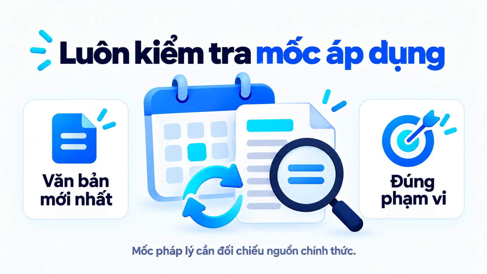
Mốc áp dụng đã được lùi lại
Các nghĩa vụ với hệ thống rủi ro cao đã được lùi. Sau khi Digital Omnibus có hiệu lực ngày 27 tháng 7 năm 2026, nhóm Phụ lục III áp dụng từ ngày 2 tháng 12 năm 2027 và nhóm Phụ lục I từ ngày 2 tháng 8 năm 2028. Nội dung yêu cầu không đổi, chỉ thời hạn đổi. Với doanh nghiệp Việt Nam có khách hoặc đối tác tại châu Âu, đây là mốc cần theo dõi chứ chưa phải việc phải làm ngay.
Ví dụ SME: duyệt quảng cáo miễn phí giao hàng
Xét một nhãn cà phê bán trực tuyến thuộc nhóm SME muốn quảng bá ưu đãi giao hàng, với hồ sơ ưu đãi chỉ áp dụng cho nhóm đơn đáp ứng điều kiện về khu vực và giá trị đơn.
Đây là ví dụ giả định
Nhãn cà phê này dùng để giải thích điểm duyệt, không phải chiến dịch đã chạy hay kết quả của một khách hàng thật.
AI tạo câu Miễn phí giao hàng cho mọi đơn. Câu nghe rõ, đúng ngữ pháp, đọc lên thấy hấp dẫn, nhưng đã mở rộng phạm vi cam kết so với hồ sơ.
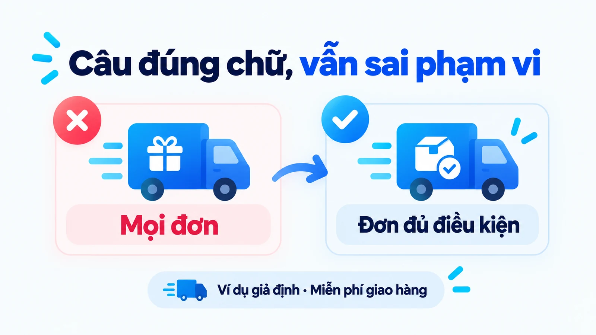
Đây là loại lỗi mà người biên tập giỏi chữ nghĩa nhất cũng không bắt được, vì nó không phải lỗi diễn đạt. Nếu người biên tập chỉ sửa câu cho hấp dẫn hơn, lỗi điều kiện vẫn tồn tại và có khi còn nặng thêm.
Người phụ trách vận hành cần xác nhận đúng phạm vi ưu đãi; người biên tập đưa điều kiện vào cách diễn đạt dễ hiểu. Hai việc hỗ trợ nhau nhưng dùng tiêu chí khác nhau và cần hai người khác nhau ký.
Một bản sửa phù hợp có thể ghi Miễn phí giao hàng cho đơn đáp ứng điều kiện ưu đãi, kèm điều kiện cụ thể tại vị trí người đọc thấy được mà không phải bấm thêm. Câu này chỉ là cách diễn đạt minh họa; khi dùng thật, đội cần điền đúng khu vực, mức đơn và thời gian đã được xác nhận.
Sau khi sửa, người duyệt kiểm lại bản sẽ phát hành. Nếu bản trong màn duyệt khác với bản được gửi, một lượt chấp nhận không chứng minh nội dung thực tế đã được kiểm tra. Phiên bản là một phần của căn cứ duyệt, không phải chi tiết kỹ thuật bên lề. Cách xử lý đơn giản nhất là gắn mã phiên bản vào bản nháp và hiển thị mã đó ngay trong màn duyệt.
Người duyệt cần nhìn gì và quyết định gì?
Cần năm thứ đi kèm bản nháp, không nằm rải rác ở các file khác để người duyệt tự đi tìm. Thiếu một trong năm, lượt duyệt trở thành phán đoán dựa trên cảm giác về chất lượng câu chữ.
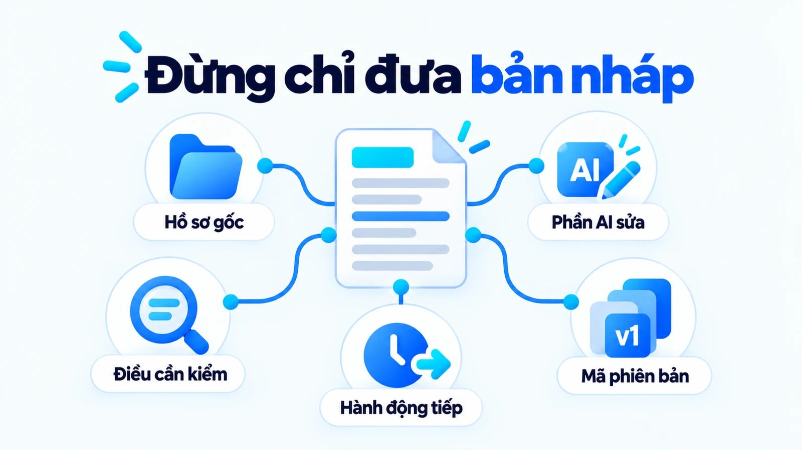
Hành động sắp diễn ra là mục hay bị bỏ
Mục quan trọng nhưng hay bị bỏ là hành động sắp diễn ra. Khi người duyệt biết bấm chấp nhận sẽ dẫn tới lưu nháp, gửi email cho hai nghìn người, hay đăng công khai lên fanpage, họ mới đánh giá đúng hệ quả của quyết định. Cùng một bản nháp nhưng ba hành động đó xứng đáng ba mức cẩn trọng khác nhau.
| Phần cần duyệt | Căn cứ phù hợp | Người phù hợp | Quyết định có thể đưa ra |
|---|---|---|---|
| Điều kiện ưu đãi | Hồ sơ được người phụ trách xác nhận | Người vận hành | Giữ đúng phạm vi cam kết hoặc trả lại hồ sơ |
| Khẳng định về sản phẩm | Tài liệu đúng dòng và đúng phiên bản | Người phụ trách | Sửa, bỏ hoặc yêu cầu thêm căn cứ cho khẳng định |
| Số liệu và nguồn dẫn | Nguồn gốc kèm ngày và phạm vi đo | Người biên tập | Đối chiếu lại hoặc gỡ số liệu khỏi bài viết |
| Giọng điệu và cách nói | Hướng dẫn thương hiệu và ngữ cảnh kênh | Người biên tập | Biên tập cách diễn đạt |
Bảng này cho thấy vì sao không nên giao mọi phần cho một người chỉ có trách nhiệm kiểm giọng. Khi gặp thông tin vượt chuyên môn, quyền chuyển cho người phù hợp quan trọng ngang quyền sửa. Đọc tiếp bài Brand voice và tone of voice khác nhau thế nào để tách bản sắc giọng khỏi độ đúng của dữ kiện.
Điểm duyệt cũng cần cho phép phản hồi rõ lý do. Nếu lựa chọn duy nhất là chấp nhận, người duyệt có thể phải thông qua một bản chưa đủ căn cứ để tránh làm công việc mắc lại. Một phương án trả lại hồ sơ hoặc từ chối giúp giữ trạng thái chưa hoàn tất đúng với thực tế, thay vì đẩy trạng thái đó sang chỗ khác.
Vì sao người duyệt vẫn có thể bỏ sót lỗi?
Vì thiên lệch tự động hóa là một cơ chế có thật, đo được, và nó tác động cả lên người có chuyên môn đang giữ vai trò human-in-the-loop. Một nghiên cứu công bố ngày 1 tháng 11 năm 2024 trên 28 chuyên gia giải phẫu bệnh cho thấy trong 560 lượt đánh giá có AI hỗ trợ, có 38 lượt mà một đánh giá ban đầu đúng bị gợi ý sai của AI lật ngược. Tỉ lệ khoảng 7%.
Cách đọc con số 7% đúng phạm vi
Đây là bối cảnh y khoa với chuyên gia được đào tạo bài bản, không phải đội nội dung, nên không suy ra tỉ lệ tương đương cho việc duyệt bài. Cùng nghiên cứu cũng ghi nhận các chuyên gia phần lớn không đổi ý theo AI khi hai bên khác nhau, chỉ 67 trên 560 lượt là có đổi.
Giá trị của con số nằm ở cơ chế, không nằm ở độ lớn: ngay cả người đang làm đúng chuyên môn của mình vẫn có thể bị một gợi ý sai kéo khỏi kết luận đúng ban đầu.
Sức ép thời gian làm người duyệt bám theo bản nháp hơn
Phát hiện thứ hai của nghiên cứu này đáng chú ý hơn với đội marketing. Khi có sức ép thời gian, tỉ lệ bị gợi ý sai kéo theo vẫn giữ nguyên khoảng 7%, nhưng mức bám theo gợi ý của máy tăng từ 0,58 lên 0,65 và hiệu quả làm việc giảm. Nói cách khác, rút ngắn thời gian duyệt để chạy kịp chiến dịch không làm người duyệt sai nhiều hơn về số lượt, nhưng làm họ bám theo bản nháp nhiều hơn và sửa ít đi.
Cộng thêm các nguyên nhân quen thuộc: người duyệt thiếu tài liệu, đọc nhiều quảng cáo giống nhau nên quen nhìn vào tiêu đề và bỏ phần điều kiện, hoặc hồ sơ ưu đãi nằm ở một nơi khác và đã đổi phiên bản.
IBM cũng lưu ý người vốn có thiên lệch riêng, nên sự tham gia của người là một lớp hỗ trợ, không phải chứng nhận tuyệt đối. Giao cho một mô hình AI khác tự kiểm bài cũng không giải quyết được phần quyền và trách nhiệm. Đọc tiếp bài Ảo giác AI là gì để hiểu vì sao có dẫn nguồn vẫn chưa đủ xác nhận nội dung đúng.
Cách nói nào giúp người duyệt tỉnh táo hơn?
Nói về tỉ lệ sai, thay vì nói về tỉ lệ đúng. Đây là kết quả của một nghiên cứu công bố ngày 30 tháng 4 năm 2026 trên tạp chí Cognitive Research: Principles and Implications. Nhóm tác giả cho 175 người dùng một hệ thống AI mô phỏng có tỉ lệ sai khoảng 20%, rồi thay đổi cách giới thiệu hệ thống đó với từng nhóm.
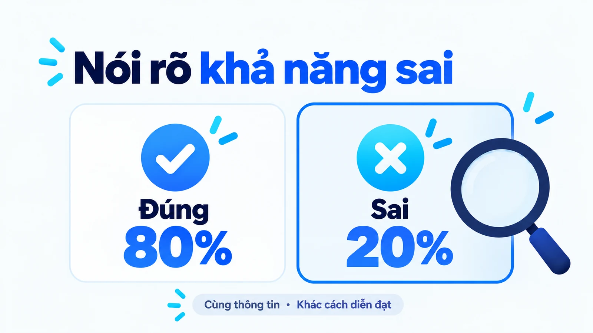
Kết quả: nhấn vào rủi ro sai của AI có tác dụng giảm xu hướng đi theo gợi ý sai mạnh hơn là nhấn vào độ chính xác của nó. Người được cảnh báo về tỉ lệ lỗi cũng ít bị nhiễm thiên lệch từ máy hơn.
Việc cần làm khi đưa human-in-the-loop vào đội nội dung rất cụ thể. Khi bàn giao một công cụ AI cho người viết và người duyệt, đừng giới thiệu bằng câu công cụ này chính xác cao. Hãy ghi rõ tỉ lệ sai ước lượng và quan trọng hơn là loại lỗi thường gặp.
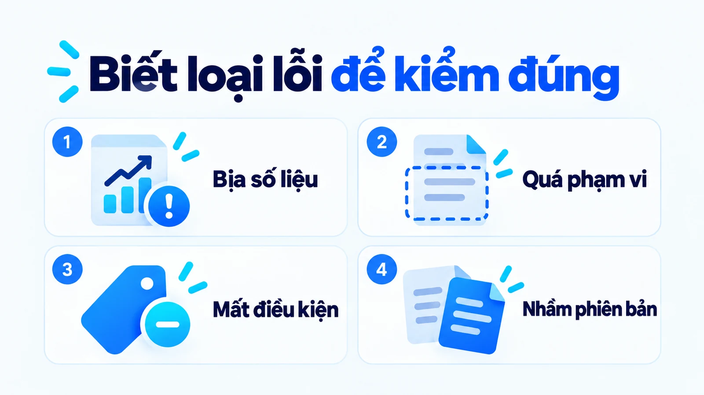
Bốn loại lỗi trong hình là ví dụ, không phải danh sách chuẩn. Mỗi đội cần rút danh sách của riêng mình từ chính các bản đã duyệt được lấy mẫu, vì loại lỗi phụ thuộc vào ngành hàng, vào cách viết hướng dẫn đầu vào và vào chất lượng hồ sơ nguồn. Một đội bán thiết bị kỹ thuật sẽ gặp nhiều lỗi nhầm thông số; một đội bán dịch vụ sẽ gặp nhiều lỗi mở rộng phạm vi cam kết.
Thí nghiệm này có giới hạn gì?
Thí nghiệm chạy trên 175 sinh viên với một nhiệm vụ mô phỏng, không phải trên người làm nội dung chuyên nghiệp. Nó không cho biết tác dụng kéo dài bao lâu, và cũng không nói cảnh báo sẽ hiệu quả với mọi loại công việc. Điều dùng được là hướng: mô tả giới hạn cụ thể hơn là quảng cáo năng lực.
Mức duyệt nào cho loại nội dung nào?
Phân theo hệ quả khi lỗi lọt ra ngoài, không phân theo độ dài bài hay theo kênh đăng. Áp một mức human-in-the-loop cho mọi loại nội dung dẫn tới hai hỏng cùng lúc: nội dung rủi ro cao bị duyệt qua loa vì hàng chờ quá dài, còn ghi chú nội bộ thì tắc lại vô ích.
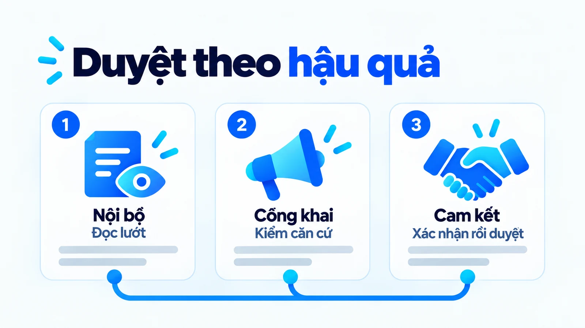
- Mức một, lỗi dễ sửa và không ra ngoài: ghi chú nội bộ, tóm tắt họp, bản nháp ý tưởng chưa dùng tới. Một người đọc lướt là đủ.
- Mức hai, nội dung ra ngoài nhưng sửa được: bài blog, bài mạng xã hội, mô tả sản phẩm trên sàn thương mại điện tử. Cần kiểm dữ kiện rồi một người duyệt.
- Mức ba, nội dung tạo ra cam kết với khách: quảng cáo có điều kiện ưu đãi, nội dung về giá, bảo hành hoặc sức khỏe. Ở mức này cần người vận hành xác nhận phạm vi trước, rồi người duyệt ký.
Cách dựng bảng phân mức cho đội mình
Việc này khá đơn giản. Liệt kê mười loại nội dung đội đang sản xuất, với mỗi loại hỏi một câu: nếu bài này sai, điều tệ nhất có thể xảy ra là gì và mất bao lâu để sửa. Câu trả lời sẽ tự chia mười loại đó thành ba nhóm. Điều quan trọng là bảng này được viết ra và được thống nhất, chứ không nằm trong đầu trưởng nhóm.
Với nội dung cá nhân hóa theo từng khách, hãy tách bước chọn gợi ý khỏi bước viết lời giới thiệu vì hai bước cần tiêu chí duyệt khác nhau, như bài AI personalization là gì phân tích.
Đánh giá chất lượng duyệt bằng chỉ số nào?
Không bằng tỉ lệ chấp nhận đứng một mình. Tỉ lệ chấp nhận cao có thể là do bản nháp tốt, do tiêu chí quá dễ, hoặc do người duyệt đang lướt nhanh, và ba nguyên nhân đó cần ba cách xử lý hoàn toàn khác nhau. Một chỉ số không phân biệt được ba nguyên nhân thì không dùng để ra quyết định được.
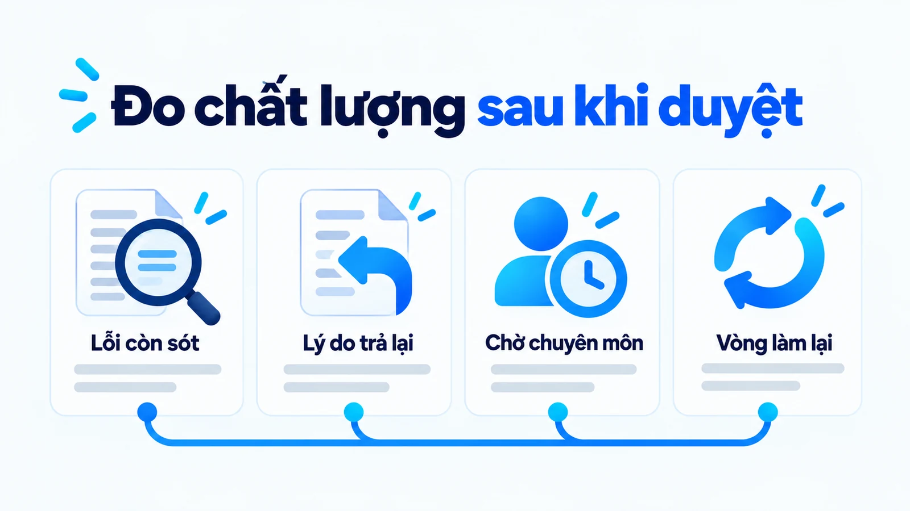
Chỉ số đáng tin nhất của human-in-the-loop là lỗi còn lọt sau khi duyệt, và cách đo nó là lấy mẫu. Mỗi tháng rút ngẫu nhiên khoảng mười bản đã được chấp nhận rồi đối chiếu lại với hồ sơ gốc. Số lỗi tìm thấy trong mẫu đó nói nhiều hơn mọi chỉ số quy trình khác, vì nó đo kết quả chứ không đo thao tác.
Ba chỉ số nên đọc kèm
Nội dung đã sửa và lý do từ chối cho biết người duyệt đang bắt được loại lỗi nào và bỏ sót loại nào. Thời gian chờ người có chuyên môn cho biết điểm nghẽn nằm ở khâu nào. Tỉ lệ bản phải quay lại từ hai lần trở lên cho biết tiêu chí đầu ra có đủ rõ ngay từ đầu hay không, vì một bản quay lại ba lần thường là dấu hiệu đề bài chưa rõ chứ không phải người viết kém.
Nếu những người duyệt thường bất đồng với nhau, hãy kiểm tra họ có cùng hồ sơ và hiểu cùng điều kiện hay không, trước khi kết luận một người làm sai. Phần lớn bất đồng trong khâu duyệt đến từ việc hai người đang đọc hai bản tài liệu khác nhau.
Chi phí thật của một điểm duyệt nằm ở đâu?
Ở bốn khoản thời gian của human-in-the-loop, và cả bốn đều không nằm trên bảng giá công cụ. Đây là phần làm một quy trình trông gọn trong bản kế hoạch mà tắc trong vận hành.
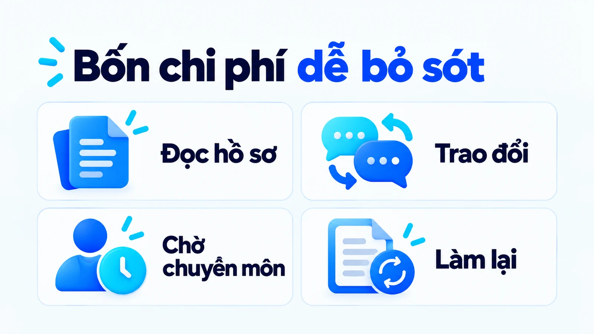
Chi phí hàng chờ tăng theo cách phản trực giác
Khoản đáng chú ý nhất là chi phí hàng chờ, vì nó tăng theo cách phản trực giác. Khi đội tự động hóa bước soạn, số bản nháp tạo ra tăng lên nhiều lần, nhưng số người đủ thẩm quyền duyệt thì không đổi. Kết quả là nhiều bản dồn về cùng một chốt, thời gian chờ kéo dài, và người duyệt bắt đầu đọc nhanh hơn để giải phóng hàng chờ. Đúng lúc đó, nghiên cứu về sức ép thời gian ở phần trên bắt đầu có hiệu lực.
Vì vậy khi đo lợi ích, hãy nhìn toàn luồng: thời gian từ lúc đủ hồ sơ tới lúc có bản được duyệt, chứ không phải tốc độ tạo chữ. Tách riêng thời gian hệ thống xử lý với thời gian chờ người phụ trách. Nếu chờ là điểm nghẽn, đổi mô hình AI mạnh hơn không giải quyết vấn đề, mà có khi còn làm nặng thêm vì nó tạo ra nhiều bản nháp hơn nữa.
Thiết kế điểm duyệt đầu tiên từ đâu?
Từ việc liệt kê những gì người duyệt hiện đang không nhìn thấy. Đây là bước rẻ nhất và thường mang lại thay đổi lớn nhất, vì phần lớn điểm duyệt kém không phải do người kém mà do người đó bị đặt vào thế phải đoán.
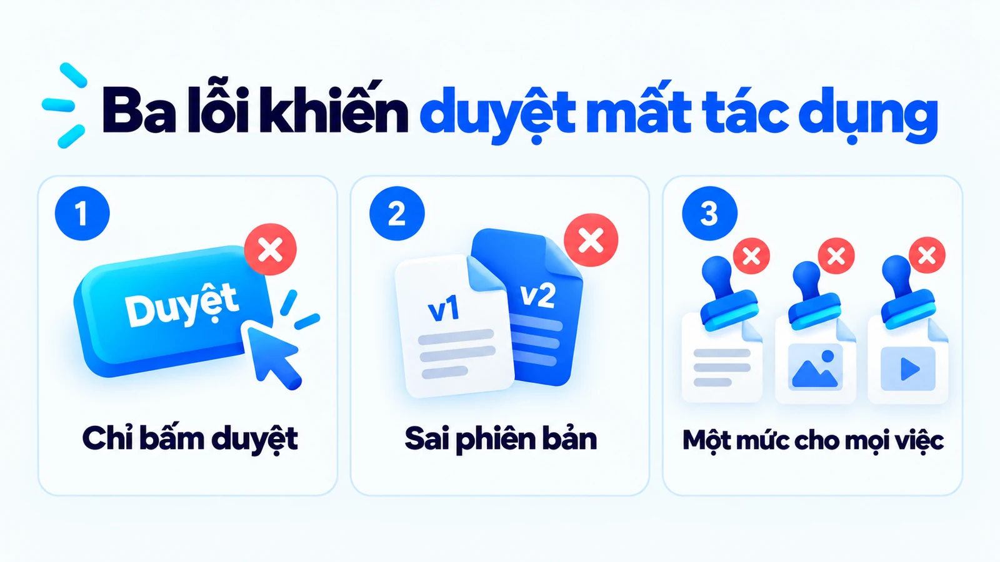
Ba sai lầm hay gặp đều sửa được bằng thao tác nhỏ. Điểm duyệt chỉ có nút chấp nhận thì thêm phương án trả lại kèm lý do và phương án chuyển người có chuyên môn. Bản đang duyệt không chắc là bản sẽ phát hành thì gắn mã phiên bản và hiển thị mã đó trong màn duyệt. Một mức duyệt cho mọi nội dung thì dựng bảng ba mức theo hệ quả của lỗi.
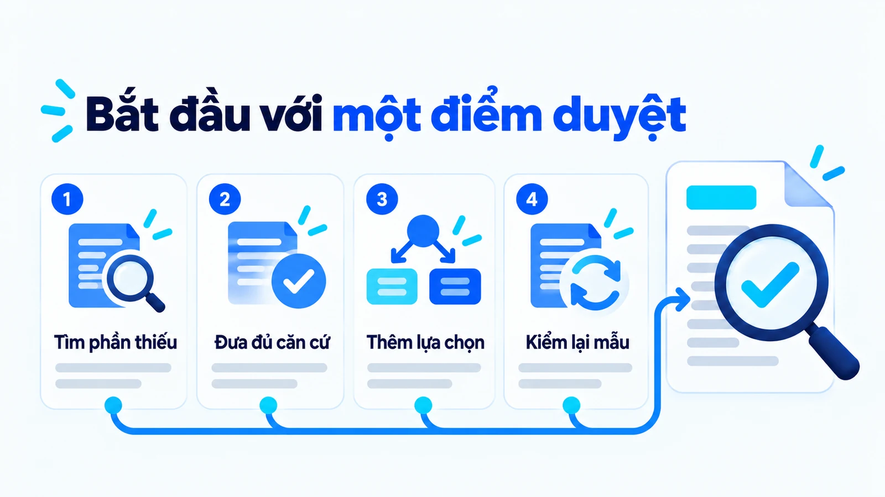
Bước 1: Tìm phần thiếu
Liệt kê những gì người duyệt hiện đang không nhìn thấy khi mở bản nháp: hồ sơ gốc, phần AI đã sửa, điều cần kiểm, hành động sắp diễn ra và mã phiên bản. Mỗi chỗ thiếu là một chỗ người duyệt buộc phải đoán.
Bước 2: Đưa đủ căn cứ
Đưa năm thứ đó vào cùng màn với bản nháp để người duyệt không phải đi tìm ở các file khác. Gắn mã phiên bản vào bản nháp và hiển thị mã đó ngay trong màn duyệt.
Bước 3: Thêm lựa chọn
Bổ sung phương án trả lại kèm lý do và phương án chuyển cho người có chuyên môn phù hợp, để người duyệt không bị đẩy vào thế chỉ còn nút chấp nhận.
Bước 4: Kiểm lại mẫu
Chạy khoảng một tháng, rồi lấy mẫu mười bản đã duyệt để đối chiếu với hồ sơ gốc và ghi lại loại lỗi tìm thấy.
Danh sách loại lỗi đó chính là thứ cần đưa cho người duyệt ở tháng tiếp theo, theo đúng nguyên tắc mô tả giới hạn cụ thể thay vì quảng cáo năng lực. Một điểm duyệt tốt lên qua từng vòng như vậy, không tốt lên nhờ đổi công cụ.
Câu hỏi thường gặp về human-in-the-loop
Mọi bài AI đều cần cùng một mức duyệt không?
Không. Mức kiểm tra phụ thuộc hệ quả khi lỗi lọt ra ngoài. Ghi chú nội bộ chỉ cần một người đọc lướt; bài blog cần kiểm dữ kiện rồi một người duyệt; quảng cáo có điều kiện ưu đãi cần người vận hành xác nhận phạm vi trước khi người duyệt ký. Đội chịu trách nhiệm cần viết bảng phân mức này ra và thống nhất, thay vì để nó nằm trong đầu trưởng nhóm.
Người sửa một câu thì AI có tự học cho lần sau không?
Không mặc định. Sửa trong phiên làm việc, lưu phản hồi để phân tích và huấn luyện lại mô hình là ba cơ chế khác nhau. Với công cụ có sẵn, bản sửa thường chỉ thay đầu ra lần này. Muốn sửa một lỗi lặp đi lặp lại, cách làm là đổi hướng dẫn đầu vào hoặc đổi tài liệu nguồn, không phải sửa thêm nhiều lần và chờ mô hình nhận ra.
Có người duyệt thì có thể khẳng định nội dung luôn đúng không?
Không. Người duyệt cũng có giới hạn, và thiên lệch tự động hóa là cơ chế đo được. Một nghiên cứu năm 2024 trên 28 chuyên gia ghi nhận khoảng 7% số lượt đánh giá ban đầu đúng bị gợi ý sai của AI lật ngược. Căn cứ phù hợp, chuyên môn và quyền quyết định giúp việc kiểm tra có ý nghĩa; đội vẫn cần lấy mẫu đối chiếu lại các bản đã duyệt.
Human-in-the-loop và human-on-the-loop khác nhau ở đâu?
Ở chỗ hệ thống có dừng lại chờ người hay không. Human-in-the-loop là người tham gia vào từng quyết định cụ thể, hệ thống dừng chờ người. Human-on-the-loop là người theo dõi quá trình và can thiệp khi thấy cần, hệ thống vẫn chạy. Tên gọi cần đi kèm mô tả quyền thực tế trong quy trình, vì hai mức này có hai mức trách nhiệm khác nhau.
Đạo luật AI châu Âu có bắt buộc đội marketing phải có người duyệt không?
Không. Điều 14 về giám sát con người áp cho hệ thống AI thuộc nhóm rủi ro cao, và việc sinh nội dung marketing không nằm trong nhóm đó. Tuy vậy danh sách năm quyền trong Điều 14 khoản 4 là mô tả cụ thể nhất hiện có về việc giám sát đòi hỏi những gì, nên dùng được làm bảng kiểm tự nguyện. Các mốc áp dụng cho nhóm rủi ro cao đã lùi về ngày 2 tháng 12 năm 2027 và ngày 2 tháng 8 năm 2028.
Nên giới thiệu công cụ AI với đội nội dung như thế nào?
Nói về tỉ lệ sai và loại lỗi thường gặp, thay vì nói về độ chính xác. Một nghiên cứu công bố tháng 4 năm 2026 trên 175 người cho thấy nhấn vào rủi ro sai làm giảm xu hướng đi theo gợi ý sai mạnh hơn là nhấn vào độ chính xác. Danh sách loại lỗi cụ thể còn hữu ích hơn một con số, vì nó chỉ cho người duyệt biết phải nhìn vào đâu.
Kết luận: Human-in-the-loop là gì và dùng thế nào cho đúng?
Human-in-the-loop trong marketing nên được hiểu qua phần việc con người thực sự kiểm soát. Khi người có thể đối chiếu, sửa hoặc dừng đúng phiên bản, việc duyệt mới đóng góp vào chất lượng nội dung. Còn nếu người duyệt chỉ có một nút và không có căn cứ, thì dù quy trình ghi là có người duyệt, phần chịu trách nhiệm thật sự vẫn đang bỏ trống.
Hãy bắt đầu bằng việc liệt kê những gì người duyệt đang không nhìn thấy, rồi lấy mẫu mười bản đã duyệt sau một tháng để biết lỗi nào còn lọt. Xem thêm các bài khác trong chuyên mục AI Marketing hoặc những dự án tôi đã triển khai.